Supply air VAV box, dual-duct, pressure sensor (VavSuDuald11)
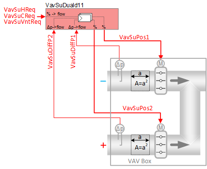 | This application function operates 2 dampers in a dual duct box, using 2 internal air volume flow controllers to drive the measured air volume flows to their air volume flow setpoints. To calculate air volume flow in each duct, this AF uses a duct area calculation and input from a differential pressure sensor. The air volume flow setpoint is calculated based on request signals (from the room controllers) received for heating, cooling and ventilation. There is an optional collection input for condensation detection at chilled beam(s) or chilled ceiling(s). Functions to support air balancing are included. Which duct is for hot and which is for cold air and which duct is connected to supply fresh air for ventilation can be selected. (Typically, Duct 1 is for cold and Duct 2 is for hot air and both can be used for ventilation). Supported are Mixing control or snap acting control as well. taking air from an outdoor system (DOAS) |
Required elements and how to configure them:
Element | I/O | Signal type |
|---|---|---|
VavSuDiffP1 "Supply air VAV differential pressure 1" | On-board input, Supply air VAV differential pressure 1 | 0…10V or P1 |
VavSuDiffP2 "Supply air VAV differential pressure 2" | On-board input, Supply air VAV differential pressure 2 | 0…10V or P1 |
VavSuPos1 "Supply air VAV position 1" and VavSuPos2 "Supply air VAV position 2" | On-board output, Setpoint for supply air VAV position | Dual-duct 0…10V or 3-position |
or KNX PL-Link device, Supply air VAV | Dual-duct Position control |
Function
The figure below shows BACnet objects associated with this application function. Primary signal flow is summarized as follows:
VAV supply heating, cooling, or ventilation request (VavSuHReq / VavSuCReq / VavSuVntReq) is received and processed into 2 output signals for VAV supply damper positions (VavSuPos1, VavSuPos2).
Basic function: Accept request signal from associated room controller and map it to appropriate air volume flow limits; Calculate the setpoint for each supply duct and compare to air volume flow in each supply duct; Pass result through a device mode logic switch for each duct prior to outputting as a command to the object that controls the device.
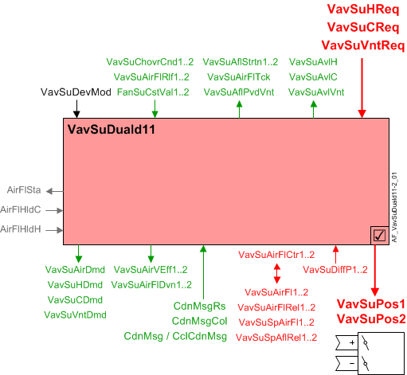
| Command or request (or related) |
| Notification of condition or status, or availability |
| Device mode |
| Interlock (internal signal, not a BACnet object; see Interlocks section for additional information) |


Interlocks
Room automation interlocks are internal signals that coordinate interaction between HVAC devices. They are not visible in ABT Site or web interface, but parameters associated with them are. See comment column for hints on parameters that affect interlock functionality.
Signal | Type | Direction | Description | Comment |
|---|---|---|---|---|
AirFlCReq | Boolean | In | Air flow cooling request |
|
AirFlHReq | Boolean | In | Air flow heating request |
|
AirFlHldH | Boolean | In | Air flow hold for heating |
|
AirFlSta | Boolean | Out | Air flow status | See Configuration section for parameters named "...AirFlSta" |
AirFlVavReq | % | Out | Air flow vav request | Fan-powered box application. |
FanSta | Boolean | In | Fan state | In series fan-powered box applications, parameter EnMonFanSta must = Yes. See Configuration section for additional information. |
Air flow control loop
The two PID air flow controllers (VavSuAirFlCtr1, VavSuAirFlCtr2) compare the air volume flows of Duct 1 and Duct 2 to their respective VAV supply air flow setpoints. VavSuPos1 and VavSuPos2 are then modulated as necessary to keep the duct flows at their setpoints.
Air flow setpoint selection: When device mode is set to Control mode (VavSuDevMod = 2), the loops work independently, but the flow setpoints are coordinated to satisfy one or more of the following air flow demand values, as required by conditions during runtime:
- Heating flow demand
- Cooling flow demand
- Ventilation flow demand
(In some circumstances a dual duct flow setpoint may be set in response to a terminal heating or cooling coil air flow support request.)
Each duct is assigned to ignore or respond to a heating, cooling, or ventilation flow demand; the assignment depends on configuration settings (see "Dual duct VAV configurations" below).
Flow demand signals VavSuHReq, VavSuCReq, and VavSuVntReq (heat, cool, vent) are in percent. Each signal is mapped to a flow rate in physical air flow units, with flow limits set individually for each function (heat, cool, vent). The mapping from percent to physical air flow units includes a step-up at the low end: switch-on point of 4% with 2% hysteresis; the request signal must rise above 4% before its corresponding air flow value rises from 0 to the request’s minimum air flow.
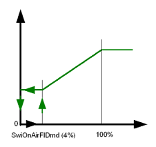
From the three air flow demands assigned to a duct (heating, cooling, or ventilation), the application selects the largest one as the current air flow setpoint. Note that the "largest" flow demand is not based solely on its initial percent value, see example.
Example:
- Assume damper position limits for cooling as min flow 10% and max flow 80%, resulting in a scale range of 70 (80 - 10 = 70). In this case, a cooling request signal of 50% results in a mapped damper position of 45%. (70 * 0.5) + 10 = 45
In the equation, "70" represents the scale range for damper excursion; "0.5" is the multiplier for a 50% cooling request signal; "10" represents the start position (minimum flow 10%) of the scale range. - Assume damper position limits for ventilation as min flow 15% and max flow 80%, resulting in a scale range of 65 (80 - 15 = 65). In this case, a ventilation request signal of 48% results in a mapped damper position of 46.2%. (65 * 0.48) + 15 = 46.2
46.2% is larger than the mapped cooling position of 45% above, despite what appears to be a smaller initial request signal for ventilation (48%) than for cooling (50%).
Current flow demands and parameter settings, along with the dynamic status of current changeover conditions (VavSuChovrCnd1, VavSuChovrCnd2) result in a variety of scenarios for overall behavior. Users configure changeover signals for each duct to indicate suitability for heating or cooling. In most cases, one duct has cool air and the other duct has hot air, and they don’t change. In less common systems the heating/cooling state of a duct can change dynamically, such that both ducts can be cold, or both can be hot. As one example, both ducts might be able to deliver cold air based on cooling demand: if cooling demand is 100%, each duct delivers its maximum cooling flow.
Device mode: The input signal for device mode is a multistate value.
VavSuDevMod supports the following states:
- Off
- Control mode (modulation)
- Max.air vol.flow
- Min.air vol.flow
- Smoke ctrl.air flow setp (manually entered damper setpoint value for smoke control)
Device mode | Duct 1 | Duct 2 |
|---|---|---|
1:Off | Setpoint is zero | Setpoint is zero |
2:Control mode | Follows demand | Follows demand |
3:Max.air vol.flow | Select from h/c maximum according to VavSuChovrCnd1: | Select from h/c maximum according to VavSuChovrCnd2: |
4:Min.air vol.flow | Select from h/c minimum according to VavSuChovrCnd1: | Select from h/c minimum according to VavSuChovrCnd2: |
5:Smoke ctrl.air flow setp | Setpoint is smoke value | Setpoint is smoke value |
Saturation signal: The saturation signal (VavSuAflStrtn) is a binary object that is True ("Starved") when the air flow control loop cannot get enough air to reach setpoint for a time exceeding a built-in time delay. After the delay expires, open loop operation begins.
Note
Saturation signal is always off if parameter EnStrtnCal = 0 (No). This allows the user to exclude a particular terminal from the saturation pressure reset system.
Air flow deviation signal: The supply air flow deviation (VavSuAirFlDvn) signal (in percent) is used for fan speed (static pressure) reset strategies at the air handling unit. It is obtained by measuring the supply air flows (Duct 1, Duct 2) and comparing to the respective air flow setpoints.
VavSuAirFlDvn = VavSuSpAflRel minus VavSuAirFlRel
VavSuAirFlDvn will equal 0 in case of invalid conditions (i.e., invalid state of related BACnet objects).
Relief input signal: A VAV box’s binary air flow relief object (VavSuAirFlRlf) can be set to True by the air handling unit. This is done to relieve flow resistance in the duct system in order to maintain proper static pressure. The VAV controller responds by increasing its air flow setpoint (VavSuSpAirFl).
When device mode = control mode and both EnRlf (Enable relief) and VavSuAirFlRlf equal On, VavSuSpAirFl will be set to the maximum of either its current value or the parameter AirFlRlf (i.e., AirFlRlf1 or AirFlRlf2).
Note
Relief has no effect on the supply chain VAV air demand signal VavSuAirDmd.
Available status: When a VAV supply damper (Duct 1 or Duct 2) is available for heating or cooling or ventilation, the respective binary output signals that indicate availability (VavSuAvlH, VavSuAvlC, VavSuAvlVnt) will be "Yes" (available). The signals are calculated for each duct, or they may be calculated together as the "available" signal for the dual duct terminal. Note: In this AF, available signals do not respond to the activity of a heating coil or a cooling coil.
For available status to be "Yes", device mode must equal "Control mode" (modulation) and the Supply air VAV changeover condition object for the applicable duct (VavSuChovrCnd1 or VavSuChovrCn2) must not equal "Neither".
- A duct is available for heating if the applicable changeover signal is Heating or Neutral and device mode is Control mode.
- A duct is available for cooling if the applicable change over signal is Cooling or Neutral and device mode is Control mode.
- A duct is available for ventilation if the ventilation configuration indicates that the duct has air for ventilation and device mode is Control mode.
Ventilation available signal: The output signal VavSuAflPvdVnt (VAV supply air flow provided for ventilation) is the amount of air flow available for ventilation. When VavSuAvlVnt is True, a maximum value (VavSuAflMaxVnt) is transferred to VavSuAflPvdVnt. VavSuAflPvdVnt is the sum of maximal flow (in engineering units) from the dual duct box(es). (Value(s) are set in each box to total the maximum flow in the segment.)
Minimum ventilation flow

See the room level ventilation control AF (VavVntCtl.xx) for detailed information on configuring minimum ventilation levels for each occupancy mode. Note that the configured min. vent flow value can effectively replace the minimum cooling flow and minimum heating flow values.
Flow sensor failure: (Duct 1 and Duct 2 are same functionality) If the air flow sensor object is invalid, then open loop operation begins. In open loop operation, damper position is controlled without using the measured air volume flow value from the sensor; instead, damper position = air flow setpoint in % of nominal air flow (largest configured max flow setting).
The DXR can also be configured to interpret low flow as a failed sensor. Parameter EnMonNoAirFl (Enable monitoring for no air volume flow) enables/disables this function. By default it is disabled.
Air balancing
Air balance functions for Dual duct follow the pattern of other VAV applications. For Dual duct, the functions are implemented twice, once for each duct. Functions include:
- Set flow setpoint according to selected balancing mode
- Calculate duct area
- Calculate flow coefficient
- Apply air flow coefficient
- Restore automatic operation
- Record data for balancing report
Each duct has a balancing mode object. Users can command both ducts to perform balancing tasks. For example, command Duct 1 balancing mode to max cooling and command Duct 2 balancing mode to min heating.
Air flow tracking signal: For rooms with a controlled exhaust terminal, the AF generates a signal representing Duct 1 and Duct 2 total measured air flow, or Duct 1 and Duct 2 total flow setpoint. The selection depends on the configured flow tracking method (flow or flow setpoint). The signal is used in the air flow tracking calculations.
VAV Dual duct configurations
Note
Default settings assign Duct 1 as cold duct and Duct 2 as hot duct, but these assignments are configurable / reversible if desired or required. The following examples use the default assignments for cold duct and hot duct (use case 4 is special case, see below).
Use case 1: VAV DD - Ventilation source in one duct
- 1a - Ventilation in cold duct (Duct 1)
- 1b - Ventilation in hot duct (Duct 2)
Use case 2: VAV DD - Ventilation in both ducts, with mixing control
- 2a - Cold duct ventilation in deadband
- 2b - Hot duct ventilation in deadband
- 2c - Last duct ventilation in deadband
Use case 3: VAV DD - Ventilation in both ducts, snap acting control
- 3a - Cold duct ventilation in deadband
- 3b - Hot duct ventilation in deadband
- 3c - Last duct ventilation in deadband
Use case 4: VAV DD - Dedicated duct for ventilation from DOAS (dedicated outside air system)
Use case 5: Constant volume DD option - Ventilation in both ducts, with mixing control
- 5a - Cold duct ventilation in deadband
- 5b - Hot duct ventilation in deadband
Main objects / parameters for dual duct use case configurations:
Name | Description | Available settings |
|---|---|---|
VavSuChovrCnd1 | Supply air VAV changeover condition 1 | 1:Neither |
VavSuChovrCnd2 | Supply air VAV changeover condition 2 | 1:Neither |
VntDuctSprt | Duct supporting ventilation | 1:No ventilation |
CtlStrgy | Control strategy | 1:Snap acting control |
VntSprtDdband | Ventilation support in dead band | 1:Duct 1 |
Color legend for graphics:
- Red = heating
- Blue = cooling
- Green = ventilation
- Yellow = total air flow
Use case 1: VAV DD - Ventilation source in one duct
In use case 1 configurations, the mechanical equipment consists of a multiple fan AHU with separate elements for heating and cooling air distribution. The hot and cold air streams are drawn from different sources and driven by separate fans. Outside air ventilation is provided in either the hot duct or the cold duct, not both.
Use Case 1a – VAV DD with ventilation in cold duct only (Duct 1):
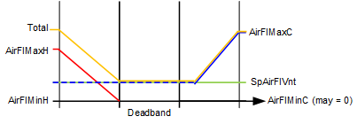 |
| 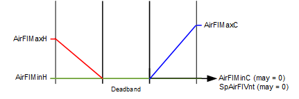 |
Cold duct does not close if ventilation requirement remains constant. |
| Cold duct may close if ventilation requirement goes to zero. |
Parameter configuration for use case 1a:
- VavSuChovrCnd1 = Cooling
- VavSuChovrCnd2 = Heating
- VntDuctSprt = Duct 1
- CtlStrgy = n/a 1)
- VntSprtDdband = n/a 1)
1) CtlStrgy and VntSprtDdband are ignored when VntDuctSprt does not equal "Both ducts".
In use case 1a, when the thermal load is in deadband the cold duct air flow will equal the current value of the ventilation flow demand (may vary per room operating mode or DCV); the hot duct air flow will be zero.
On an increase in cooling load, the cooling flow demand on the cold duct modulates from cooling flow min to cooling flow max. Cold duct air flow will be the greater of vent demand and cooling demand. Hot duct air flow will be zero.
On an increase in heating load, the heating flow demand on the hot duct modulates from heating flow min to heating flow max. Cold duct air flow will be the current value of ventilation flow demand. The total air flow during heating will be the sum of the ventilation air (from the cold duct) and the modulating heating flow.
Use Case 1b – VAV DD with ventilation in hot duct only (Duct 2):
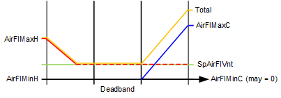 |
| |
Hot duct does not close if ventilation requirement remains constant. |
| Hot duct may close if ventilation requirement goes to zero. |
Parameter configuration for use case 1b:
- VavSuChovrCnd1 = Cooling
- VavSuChovrCnd2 = Heating
- VntDuctSprt = Duct 2
- CtlStrgy = n/a 1)
- VntSprtDdband = n/a 1)
1) CtlStrgy and VntSprtDdband are ignored when VntDuctSprt does not equal "Both ducts".
In use case 1b, when the thermal load is in deadband the hot duct air flow will equal the current value of the ventilation flow demand (may vary per room operating mode or DCV); the cold duct air flow will be zero.
On an increase in heating load, the heating flow demand on the hot duct modulates from heating flow min to heating flow max. Hot duct air flow will be the greater of vent demand and heating demand. Cold duct air flow will be zero.
On an increase in cooling load, the cooling flow demand on the cold duct modulates from cooling flow min to cooling flow max. Hot duct air flow will be the current value of ventilation flow demand. The total air flow during cooling will be the sum of the ventilation air (from the hot duct) and the modulating cooling flow.
Use case 2: VAV DD - Ventilation in both ducts, with mixing control
In use case 2 configurations, the mechanical equipment consists typically of a single fan AHU with separate elements for heating and cooling air distribution. The hot and cold air streams are drawn from the same source(s) and driven by the same fan. Outside air ventilation is provided using both ducts.
Ventilation in deadband – When ventilation is provided in both ducts, different possibilities exist for ventilation in deadband: cold duct (Duct 1), hot duct (Duct 2), and "Last duct". The dual duct can be configured according to the relative costs of providing hot air or cold air. For example, if it takes more energy to provide hot air, then it makes sense to use cold air for ventilation in the deadband. If energy costs are approximately equal, then "last duct" configuration may be preferable.
Mixing control vs. Snap acting control – Some people associate mixing hot and cold air flows in the dual duct box with wasting energy. Others appreciate the gradual temperature modulation that comes with mixing. Snap action prevents the mixing of hot and cold air flows in the dual duct box. Select according to project specifications or end-user preference.
Use Case 2a – VAV DD with ventilation in both ducts, cold duct ventilation in deadband, with mixing control:
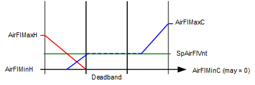 |
| |
Cold duct will stay open in deadband to meet a ventilation requirement. As heating load ramps up, cold duct damper modulates to zero as hot duct damper modulates open (i.e., mixing control during ramp up of heating mode). |
| Ducts may close if ventilation requirement goes to zero. |
Parameter configuration for use case 2a:
- VavSuChovrCnd1 = Cooling
- VavSuChovrCnd2 = Heating
- VntDuctSprt = Both ducts
- CtlStrgy = Mixing control
- VntSprtDdband = Duct 1
In use case 2a, with the thermal load in deadband the cold duct air flow will equal the current value of the ventilation flow demand (may vary per room operating mode or DCV); the hot duct air flow will be zero.
On an increase in cooling load, the cooling flow demand on the cold duct modulates from cooling flow min to cooling flow max. Cold duct air flow will be the greater of vent demand and cooling demand. Hot duct air flow will be zero.
On an increase in heating load, the heating flow demand on the hot duct modulates from heating flow min to heating flow max. Cold duct air flow will be the value of the difference between hot duct air flow and the current ventilation flow demand, provided that the ventilation flow demand is greater than hot duct air flow, otherwise cold duct air flow will be zero.
Use Case 2b – VAV DD with ventilation in both ducts, hot duct ventilation in deadband, with mixing control:
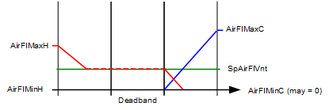 |
| |
Hot duct will stay open in deadband to meet a ventilation requirement. As cooling load ramps up, hot duct damper modulates to zero as cold duct damper modulates open (i.e., mixing control during ramp up of cooling mode). |
| Ducts may close if ventilation requirement goes to zero. |
Parameter configuration for use case 2b:
- VavSuChovrCnd1 = Cooling
- VavSuChovrCnd2 = Heating
- VntDuctSprt = Both ducts
- CtlStrgy = Mixing control
- VntSprtDdband = Duct 2
In use case 2b, with the thermal load in deadband the hot duct air flow will equal the current value of the ventilation flow demand (may vary per room operating mode or DCV); the cold duct air flow will be zero.
On an increase in heating load, the heating flow demand on the hot duct modulates from heating flow min to heating flow max. Hot duct air flow will be the greater of vent demand and heating demand. Cold duct air flow will be zero.
On an increase in cooling load, the cooling flow demand on the cold duct modulates from cooling flow min to cooling flow max. Hot duct air flow will be the value of the difference between cold duct air flow and the current value of ventilation flow demand, provided that the ventilation flow demand is greater than cold duct air flow, otherwise hot duct air flow will be zero.
Use Case 2c – VAV DD with ventilation in both ducts, last duct ventilation in deadband, with mixing control:
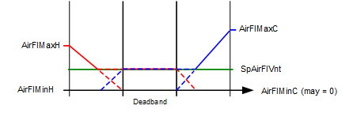 |
| |
Last active duct will stay open in deadband to meet a ventilation requirement. Outside of deadband, as the heating load (or the cooling load) ramps up, the ducts provide a hot/cold mixture to meet the ventilation requirement. See additional information below. |
| Ducts may close if ventilation requirement goes to zero. |
Parameter configuration for use case 2c:
- VavSuChovrCnd1 = Cooling
- VavSuChovrCnd2 = Heating
- VntDuctSprt = Both ducts
- CtlStrgy = Mixing control
- VntSprtDdband = Last duct
In use case 2c, with the thermal load in deadband the air flow from the last active duct (heating or cooling) will equal the current value of the ventilation flow demand (may vary per room operating mode or DCV); the inactive duct air flow will be zero.
If the last active duct = cold duct, then when the system exits the temperature deadband the behavior is as follows:
- Exiting deadband on a call for cool when last duct is the cold duct and CtlStrgy = Mixing control;
On an increase in cooling load, the cooling flow demand on the cold duct modulates from cooling flow min to cooling flow max. Cold duct air flow will be the greater of vent demand and cooling demand. Hot duct air flow will be zero. (Cold duct remains the active duct.) - Exiting deadband on a call for heat when last duct is the cold duct and CtlStrgy = Mixing control;
On an increase in heating load, the heating flow demand on the hot duct modulates from heating flow min to heating flow max. Cold duct air flow will be the value of the difference between hot duct air flow and the current value of ventilation flow demand, provided that the ventilation flow demand is greater than hot duct air flow, otherwise cold duct air flow will modulate to zero. Once the cold duct flow modulates to zero, the hot duct becomes the active duct.
If the last active duct = hot duct, then when the system exits the temperature deadband the behavior is as follows:
- Exiting deadband on a call for heat when last duct is the hot duct and CtlStrgy = Mixing control;
On an increase in heating load, the heating flow demand on the hot duct modulates from heating flow min to heating flow max. Hot duct air flow will be the greater of vent demand and heating demand. Cold duct air flow will be zero. (Hot duct remains the active duct.) - Exiting deadband on a call for cool when last duct is the hot duct and CtlStrgy = Mixing control;
On an increase in cooling load, the cooling flow demand on the cold duct modulates from cooling flow min to cooling flow max. Hot duct air flow will be the value of the difference between cold duct air flow and the current value of ventilation flow demand, provided that the ventilation flow demand is greater than cold duct air flow, otherwise hot duct air flow will modulate to zero. Once the hot duct flow modulates to zero, the cold duct becomes the active duct.
Use case 3: VAV DD - Ventilation in both ducts, snap acting control
In use case 3 configurations, the mechanical equipment consists typically of a single fan AHU with separate elements for heating and cooling air distribution. The hot and cold air streams are drawn from the same source(s) and driven by the same fan. Outside air ventilation is provided using both ducts.
Ventilation in deadband – When ventilation is provided in both ducts, different possibilities exist for ventilation in deadband: cold duct (Duct 1), hot duct (Duct 2), and "Last duct". The dual duct can be configured according to the relative costs of providing hot air or cold air. For example, if it takes more energy to provide hot air, then it makes sense to use cold air for ventilation in the deadband. If energy costs are approximately equal, then "last duct" configuration may be preferable.
Mixing control vs. Snap acting control – Some people associate mixing hot and cold air flows in the dual duct box with wasting energy. Others appreciate the gradual temperature modulation that comes with mixing. Snap action prevents the mixing of hot and cold air flows in the dual duct box. Select according to project specifications or end-user preference.
Use Case 3a – VAV DD with ventilation in both ducts, cold duct ventilation in deadband, snap acting control:
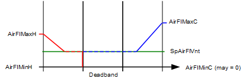 |
| |
Cold duct will stay open in deadband to meet ventilation requirement. On an exit to heating, the cold duct closes immediately and the hot duct takes over ventilation needs. |
| Ducts may close if ventilation requirement goes to zero. |
Parameter configuration for use case 3a:
- VavSuChovrCnd1 = Cooling
- VavSuChovrCnd2 = Heating
- VntDuctSprt = Both ducts
- CtlStrgy = Snap acting control
- VntSprtDdband = Duct 1
In use case 3a, with the thermal load in deadband the cold duct air flow will equal the current value of the ventilation flow demand (may vary per room operating mode or DCV); the hot duct air flow will be zero.
On an increase in cooling load, the cooling flow demand on the cold duct modulates from cooling flow min to cooling flow max. Cold duct air flow will be the greater of vent demand and cooling demand. Hot duct air flow will be zero.
On an increase in heating load, the cold duct closes and the hot duct will open (snap action) to take over any active ventilation flow rate. Heating flow demand on the hot duct modulates from heating flow min to heating flow max. Hot duct air flow will be the greater of vent demand and heating demand. Cold duct air flow will be zero.
Use Case 3b – VAV DD with ventilation in both ducts, hot duct ventilation in deadband, snap acting control:
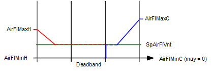 |
| |
Hot duct will stay open in deadband to meet ventilation requirement. On an exit to cooling, the hot duct closes immediately and the cold duct takes over ventilation needs. |
| Ducts may close if ventilation requirement goes to zero. |
Parameter configuration for use case 3b:
- VavSuChovrCnd1 = Cooling
- VavSuChovrCnd2 = Heating
- VntDuctSprt = Both ducts
- CtlStrgy = Snap acting control
- VntSprtDdband = Duct 2
In use case 3b, with the thermal load in deadband the hot duct air flow will equal the current value of the ventilation flow demand (may vary per room operating mode or DCV); the cold duct air flow will be zero.
On an increase in heating load, the heating flow demand on the hot duct modulates from heating flow min to heating flow max. Hot duct air flow will be the greater of vent demand and heating demand. Cold duct air flow will be zero.
On an increase in cooling load, the hot duct closes and the cold duct will open (snap action) to take over any active ventilation flow rate. Cooling flow demand on the cold duct modulates from cooling flow min to cooling flow max. Cold duct air flow will be the greater of vent demand and cooling demand. Hot duct air flow will be zero.
Use Case 3c – VAV DD with ventilation in both ducts, last duct ventilation in deadband, snap acting control:
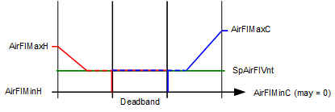 |
| |
Last active duct will stay open in deadband to meet ventilation requirement. For behavior outside of deadband see additional information below. |
| Ducts may close if ventilation requirement goes to zero. |
Parameter configuration for use case 3c:
- VavSuChovrCnd1 = Cooling
- VavSuChovrCnd2 = Heating
- VntDuctSprt = Both ducts
- CtlStrgy = Snap acting control
- VntSprtDdband = Last duct
In use case 3c, with the thermal load in deadband the air flow from the last active duct will equal the current value of the ventilation flow demand (may vary per room operating mode or DCV); the inactive duct air flow will be zero.
If the last active duct = cold duct, then when the system exits the temperature deadband the behavior is as follows:
- Exiting deadband on a call for cool when last duct is the cold duct and CtlStrgy = Snap acting;
On an increase in cooling load, the cooling flow demand on the cold duct modulates from cooling flow min to cooling flow max. Cold duct air flow will be the greater of vent demand and cooling demand. Hot duct air flow will be zero. (Cold duct remains the active duct.) - Exiting deadband on a call for heat when last duct is the cold duct and CtlStrgy = Snap acting;
On an increase in heating load, the cold duct closes (snap action) and the heating loop becomes the active loop / duct. As the heating flow demand on the hot duct modulates from heating flow min to heating flow max, the hot duct air flow will be the greater of vent demand and heating demand.
If the last active duct = hot duct, then when the system exits the temperature deadband the behavior is as follows:
- Exiting deadband on a call for heat when last duct is the hot duct and CtlStrgy = Snap acting;
On an increase in heating load, the heating flow demand on the hot duct modulates from heating flow min to heating flow max. Hot duct air flow will be the greater of vent demand and heating demand. Cold duct air flow will be zero. (Hot duct remains the active duct.) - Exiting deadband on a call for cool when last duct is the hot duct and CtlStrgy = Snap acting;
On an increase in cooling load, the hot duct closes (snap action) and the cooling loop becomes the active loop / duct. As the cooling flow demand on the cold duct modulates from cooling flow min to cooling flow max, the cold duct air flow will be the greater of vent demand and cooling demand.
Use Case 4: VAV DD - Dedicated duct for ventilation from DOAS (dedicated outside air system)
In use case 4 configurations, the mechanical equipment consists of a multiple fan AHU with DOAS, and separate elements (if present) for heating / cooling air distribution. When the thermal load is in deadband, air flow in the duct used for temperature control can be zero (Duct 1 in graphic).
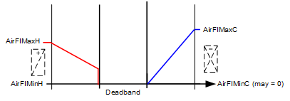 |
| 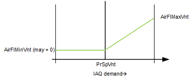 |
Duct 1 |
| Duct 2 |
Parameter configuration for use case 4:
- VavSuChovrCnd1 = Cooling
- VavSuChovrCnd2 = Neither
- VntDuctSprt = Duct 2
- CtlStrgy = n/a 1)
- VntSprtDdband = n/a 1)
1) CtlStrgy and VntSprtDdband are ignored when VntDuctSprt does not equal "Both ducts".
In use case 4, all ventilation is handled in Duct 2 by dedicated outside air system (DOAS). Minimum ventilation levels can be specified per room occupancy mode. When configured for DCV (demand control ventilation) an increase in ventilation flow is provided in response to room IAQ (CO2) setpoints configured per occupancy mode.
Temperature control is provided by Duct 1 and may include optional heating or cooling coils. On an increase in cooling load, Duct 1 will modulate from cooling flow min to cooling flow max. In heating mode, Duct 1 will provide air flow to support heating coil(s) from heating flow min to heating flow max.
Use Case 5: Constant volume DD option with ventilation in both ducts, with mixing control
In use case 5 configurations, the mechanical equipment consists typically of a single fan AHU with separate elements for heating and cooling air distribution. The hot and cold air streams are drawn from the same source(s) and driven by the same fan. Outside air ventilation is provided using both ducts.
To achieve the constant volume option, the minimum ventilation parameter(s) located in the room AF for ventilation control (VavVntCtl) are set equal or greater than the heating / cooling maximum flow setpoints (VavSuAirFlMaxC, VavSuAirFlMaxH). When this is done, the terminal provides constant air flow in the Comfort mode, and may be configured to reduce flow in other room operating modes.
In constant volume configurations, temperature control is maintained at a single setpoint, either heating or cooling, depending on the setting of parameter VntSprtDdband (Ventilation support in deadband). See following examples.
Use Case 5a – Constant volume DD option, ventilation in both ducts, mixing control, with cold duct ventilation in deadband
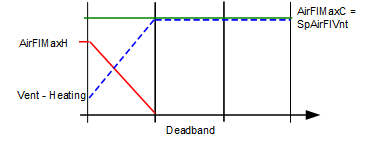 |
| 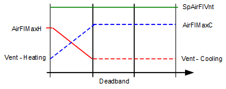 |
VntSprtDdband = Duct 1, example 1: Cold duct stays at constant max volume during cooling and deadband to provide the elevated minimum ventilation setting. At the heating setpoint, mixing control occurs to maintain constant volume dual duct air flow and room temperature control: as heating load ramps up, hot duct damper modulates open and cold duct damper modulates down. Optional heat elements (e.g. hot water coil) can be configured to provide additional heating after the hot duct has reached maximum flow. |
| VntSprtDdband = Duct 1, example 2: Cold duct stays at constant max volume during cooling and deadband with an additional level of supplemental ventilation air flow provided by hot duct. The air flows are summed to provide an elevated minimum ventilation setting larger than max cooling flow. At the heating setpoint, mixing control occurs to maintain constant volume dual duct air flow and room temperature control: as heating load ramps up, hot duct damper modulates open and cold duct damper modulates down. When the total flow (ventilation setpoint) is larger than the max heating setpoint, the cold duct provides the additional supplemental ventilation air flow. Optional heat elements (e.g. hot water coil) can be configured to provide additional heating after the hot duct has reached maximum flow. |
Parameter configuration for use case 5a:
- VavSuChovrCnd1 = Cooling
- VavSuChovrCnd2 = Heating
- VntDuctSprt = Both ducts
- CtlStrgy = Mixing control
- VntSprtDdband = Duct 1 (mixing will occur at/during setpoint for Duct 2 hot duct)
- Minimum ventilation parameter(s)* = desired CV flow
*In the room AF for ventilation control (VavVntCtl) set min vent parameter for Comfort mode (AirFlMinRCmf) to desired CV flow; the min vent setpoint object in VavSuDuald11 (VavSuAflMinVnt) can be set to zero when the minimum ventilation parameters are used for min vent settings.
Note that if minimum ventilation parameter is not set high (for example during Economy mode) constant volume is not provided:
Use Case 5b – Constant volume DD option, ventilation in both ducts, mixing control, and hot duct ventilation in deadband
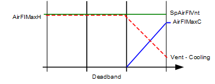 |
| 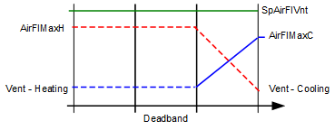 |
VntSprtDdband = Duct 2, example 1: Hot duct stays at constant max volume during heating and deadband to provide the elevated minimum ventilation setting. At the cooling setpoint, mixing control occurs to maintain constant volume dual duct air flow and room temperature control: as cooling load ramps up, cold duct damper modulates open and hot duct damper modulates down. Optional cooling elements (e.g. chilled water coil) can be configured to provide additional cooling after the cold duct has reached maximum flow. |
| VntSprtDdband = Duct 2, example 2: Hot duct stays at constant max volume during heating and deadband with an additional level of supplemental ventilation air flow provided by cold duct. The air flows are summed to provide an elevated minimum ventilation setting larger than max heating flow. At the cooling setpoint, mixing control occurs to maintain constant volume dual duct air flow and room temperature control: as cooling load ramps up, cold duct damper modulates open and hot duct damper modulates down. When the total flow (ventilation setpoint) is larger than the max cooling setpoint, the hot duct provides the additional supplemental ventilation air flow. Optional cooling elements (e.g. chilled water coil) can be configured to provide additional cooling after the cold duct has reached maximum flow. |
Parameter configuration for use case 5b:
- VavSuChovrCnd1 = Cooling
- VavSuChovrCnd2 = Heating
- VntDuctSprt = Both ducts
- CtlStrgy = Mixing control
- VntSprtDdband = Duct 2 (mixing will occur at/during setpoint for Duct 1 cold duct)
- Minimum ventilation parameter(s)* = desired CV flow
*In the room AF for ventilation control (VavVntCtl) set min vent parameter for Comfort mode (AirFlMinRCmf) to desired CV flow; the min vent setpoint object in Duald11 (VavSuAflMinVnt) can be set to zero when the minimum ventilation parameters are used for min vent settings.
Note that if minimum ventilation parameter is not set high (for example during Economy mode) constant volume is not provided:
Configuration
 Objects
Objects
Description | Object | Type | Default value |
|---|---|---|---|
Supply air VAV flow coefficient 1 ▶ The value used to calibrate span of air flow measurement; can be entered manually or the value of the calculated flow coefficient (VavSuFlCoeCal1) is written to this object following the Calibrate command. | VavSuFlCoef1 | ACnfVal | 0.780 |
Supply air VAV flow coefficient 2 | VavSuFlCoef2 | ACnfVal | 0.780 |
Supply air VAV initial flow coefficient 1 | VavSuFlCoeIni1 | ACnfVal | 0.000 |
Supply air VAV initial flow coefficient 2 | VavSuFlCoeIni2 | ACnfVal | 0.000 |
Air flow settings | |||
Supply air VAV smoke control air volume flow setpoint | VavSuSpAflSmk | ACnfVal | 50.0 [m3/h] |
Supply air VAV maximum air volume flow for cooling | VavSuAirFlMaxC | ACnfVal | 100.0 [m3/h] |
Supply air VAV minimum air volume flow for cooling | VavSuAirFlMinC | ACnfVal | 50.0 [m3/h] |
Supply air VAV maximum air volume flow for heating | VavSuAirFlMaxH | ACnfVal | 100.0 [m3/h] |
Supply air VAV minimum air volume flow for heating | VavSuAirFlMinH | ACnfVal | 50.0 [m3/h] |
Supply air VAV maximum air volume flow for ventilation | VavSuAflMaxVnt | ACnfVal | 100.0 [m3/h] |
Supply air VAV minimum air volume flow for ventilation | VavSuAflMinVnt | ACnfVal | 0.0 [m3/h] |
Duct 1 | |||
Supply air VAV duct area 1 ▶ Duct cross-sectional area, user-entered or calculated by automation station using the duct shape, dimension A and dimension B values. For user-entered method, VavSuDuctShape must be set to 4:Direct entry, otherwise data entry by user will trigger area calculation but the resulting value may be overwritten. | VavSuDuctArea1 | ACnfVal | 0.05 [m2] |
Supply air VAV duct shape 1 ▶ Duct cross-sectional shape; Direct entry uses user-entered area, not controller calculation. 1:Rectangular | VavSuDuctShp1 | MCnfVal | 2:Round |
Supply air VAV dimension A 1 ▶ For rectangular duct: Width; for round duct: Diameter; for flat oval duct: Total width (major dimension); for Direct entry: Not used. | VavSuDmsnA1 | ACnfVal | 20.0 [cm] |
Supply air VAV dimension B 1 ▶ For rectangular duct: Height; for round duct: Not used; for flat oval duct: Height (minor dimension); for Direct entry: Not used. | VavSuDmsnB1 | ACnfVal | 20.0 [cm] |
Duct 2 | |||
Supply air VAV duct area 2 | VavSuDuctArea2 | ACnfVal | 0.05 [m2] |
Supply air VAV duct shape 2 Enumeration see VavSuDuctShp1 | VavSuDuctShp2 | MCnfVal | 2:Round |
Supply air VAV dimension A 2 | VavSuDmsnA2 | ACnfVal | 20.0 [cm] |
Supply air VAV dimension B 2 | VavSuDmsnB2 | ACnfVal | 20.0 [cm] |
 Parameters
Parameters
Description | Parameter | Default value |
|---|---|---|
Nominal air volume flow 1 ▶ Maximum air flow capacity for Duct 1 into the VAV Dual duct box. Can be set equal to the largest max flow setpoint related to Duct 1 or preferably set to zero and not used in application calculations. | AirFlNom1 | 100 [m3/h] |
Nominal air volume flow 2 ▶ Maximum air flow capacity for Duct 2 into the VAV Dual duct box. Can be set equal to the largest max flow setpoint related to Duct 2 or preferably set to zero and not used in application calculations. | AirFlNom2 | 100 [m3/h] |
Settings | ||
Control strategy 1:Snap acting control | CtlStrgy | 1:Snap acting control |
Duct supporting ventilation 1:No ventilation | VntDuctSprt | 4:Both ducts |
Ventilation support in dead band 1:Duct 1 | VntSprtDdband | 1:Duct 1 |
Setpoint selector for extract air VAV box 0:False (Supply air flow setpoint used) | SpSelVavEx | 1:Supply air flow |
Differential pressure and air flow monitoring | ||
Switch-on point for differential pressure 1 ▶ The differential pressure sensor signal value for duct 1 must be above this value or else zero is used. | SwiOnPtDiffP1 | 0.2 [Pa] |
Hysteresis for differential pressure 1 ▶ Amount below SwiOnPtDiffP1, below which the pressure value used by the controller will be zero. | HysDiffP1 | 0.1 [Pa] |
Switch-on point for differential pressure 2 ▶ The differential pressure sensor signal value for duct 2 must be above this value or else zero is used. | SwiOnPtDiffP2 | 0.2 [Pa] |
Hysteresis for differential pressure 2 ▶ Amount below SwiOnPtDiffP2 below which the pressure value used by the controller will be zero. | HysDiffP2 | 0.1 [Pa] |
Enable monitoring for missing air volume flow 0:No | EnMonNoAirFl | 0:No |
Interlocks | ||
Switch-on point for air volume flow state | SwiOnAirFlSta | 10 [%] |
Hysteresis for air volume flow state | HysAirFlSta | 5 [%] |
Enable monitoring for fan state 0:No | EnMonFanSta | 0:No |
Deviation calculation | ||
Enable deviation calculation 1 ▶ When set to 1:Yes, enables the calculation of the deviation value for duct 1 (Air flow setpoint minus air flow value) to be available for AHU fan static setpoint reset. See also section Air flow deviation signal. 0:No | EnDvnCal1 | 1:Yes |
Enable deviation calculation 2 ▶ When set to 1:Yes, enables the calculation of the deviation value for duct 2 (Air flow setpoint minus air flow value) to be available for AHU fan static setpoint reset. See also section Air flow deviation signal. 0:No | EnDvnCal2 | 1:Yes |
Saturation calculation | ||
Enable saturation calculation 1 ▶ When EnStrtnCal1 is set to 1:Yes, the calculation logic for the saturation signal for duct 1 (VavSuAflStrtn1) is enabled and active. Saturation signal calculation logic: 0:No | EnStrtnCal1 | 1:Yes |
Saturation level 1 ▶ Level of damper opening used to indicate that the terminal is "nearly wide open". If VAV damper position VavSuPos1 > StrtnLvl1 and the air flow error (setpoint minus air flow value) > AirFlErLm1 and EnStrtnCal1 = Yes, then the Saturation signal for duct 1 will be True. | StrtnLvl1 | 90 [%] |
Air volume flow error limit 1 ▶ If the air flow error (setpoint minus air flow value) > AirFlErLm1 and VavSuPos1 > StrtnLvl1 and EnStrtnCal1 = Yes, then the Saturation signal for duct 1 will be True. | AirFlErLm1 | 0 [%] |
Switch-on delay saturation 1 ▶ The time after the saturation conditions for duct 1 are met that the saturation signal to the AHU goes from False to True. | DlyOnStrtn1 | 60 [s] |
Enable saturation calculation 2 ▶ When EnStrtnCal2 is set to 1:Yes, the calculation logic for the saturation signal (VavSuAflStrtn2) is enabled and active. Saturation signal calculation logic: 0:No | EnStrtnCal2 | 1:Yes |
Saturation level 2 ▶ Level of damper opening used to indicate that the terminal is "nearly wide open". If VAV damper position VavSuPos2 > StrtnLvl2 and the air flow error (setpoint minus air flow value) > AirFlErLm2 and EnStrtnCal2 = Yes, then the Saturation signal for duct 2 will be True. | StrtnLvl2 | 90 [%] |
Air volume flow error limit 2 ▶ If the air flow error (setpoint minus air flow value) > AirFlErLm2 and VavSuPos2 > StrtnLvl2 and EnStrtnCal2 = Yes, then the Saturation signal for duct 2 will be True. | AirFlErLm2 | 0 [%] |
Switch-on delay saturation 2 ▶ The time after the saturation conditions for duct 2 are met that the saturation signal to the AHU goes from False to True. | DlyOnStrtn2 | 60 [s] |
Air flow demand | ||
Switch-on point for air flow demand | SwiOnAirFlDmd | 4 [%] |
Hysteresis for air flow demand | HysAirFlDmd | 2 [%] |
Relief functionality | ||
Enable relief 1 ▶ Yes: this terminal opens to relieve fan pressure. 0:No | EnRlf1 | 0:No |
Air volume flow relief 1 ▶ The amount of air that this terminal draws when operating to relieve fan pressure. | AirFlRlf1 | 50 [m3/h] |
Enable relief 2 ▶ Yes: this terminal opens to relieve fan pressure. 0:No | EnRlf2 | 0:No |
Air volume flow relief 2 ▶ The amount of air that this terminal draws when operating to relieve fan pressure. | AirFlRlf2 | 50 [m3/h] |
Internal settings – do not change | ||
Pressure unit | PUnit | [Pa] |
Air volume flow unit | AirFlUnit | [m3/h] |
Interface
Interface | Description | Type | Ref. | Owned by | |
|---|---|---|---|---|---|
VavSuPos1 | Supply air VAV position 1 | AO | ◉ | Room segment / Device | |
VavSuPos2 | Supply air VAV position 2 | AO | ◉ | Room segment / Device | |
VavSuDiffP1 | Supply air VAV differential pressure 1 | AI | ◉ | Room segment / Device | |
VavSuDiffP2 | Supply air VAV differential pressure 2 | AI | ◉ | Room segment / Device | |
VavSuAirVEff1 | Supply air VAV effective air velocity 1 | ACalcVal | ● | - | |
VavSuSpAirFl1 | Supply air VAV setpoint for air volume flow 1 | APrcVal | ● | - | |
TrndVavSuAfl1 | Trend for supply air VAV air volume flow 1 | FtrSel | ● | - | |
TrndVavSuAfl2 | Trend for supply air VAV air volume flow 2 | FtrSel | ● | - | |
VavSuSpAflRel1 | Supply air VAV setpoint for relative air volume flow 1 | ACalcVal | ● | - | |
VavSuAirFl1 | Supply air VAV air volume flow 1 | ACalcVal | ● | - | |
VavSuAirFlRel1 | Supply air VAV relative air volume flow 1 0:Off | ACalcVal | ● | - | |
VavSuAirFlDvn1 | Supply air VAV air volume flow deviation 1 | ACalcVal | ● | - | |
VavSuAflStrtn1 | Supply air VAV air volume flow saturation 1 0:Satisfied | BCalcVal | ● | - | |
VavSuAirVEff2 | Supply air VAV effective air velocity 2 | ACalcVal | ● | - | |
VavSuSpAirFl2 | Supply air VAV setpoint for air volume flow 2 | APrcVal | ● | - | |
VavSuSpAflRel2 | Supply air VAV setpoint for relative air volume flow 2 | ACalcVal | ● | - | |
VavSuAirFl2 | Supply air VAV air volume flow 2 | ACalcVal | ● | - | |
VavSuAirFlRel2 | Supply air VAV relative air volume flow 2 Enumeration see VavSuAirFlRel1 | ACalcVal | ● | - | |
VavSuAirFlDvn2 | Supply air VAV air volume flow deviation 2 | ACalcVal | ● | - | |
VavSuAflStrtn2 | Supply air VAV air volume flow saturation 2 Enumeration see VavSuAflStrtn1 | BCalcVal | ● | - | |
VavSuAirFlTot | Supply air VAV total air volume flow | ACalcVal | ● | - | |
VavSuDevMod | Supply air VAV device mode 1:Off | MPrcVal | ● | - | |
VavSuAirFlCtr1 | Supply air VAV air flow controller 1 | Controller | ● | - | |
VavSuAirFlCtr2 | Supply air VAV air flow controller 2 | Controller | ● | - | |
VavSuCReq | Supply air VAV cooling request | ACalcVal | ● | - | |
VavSuHReq | Supply air VAV heating request | ACalcVal | ● | - | |
VavSuVntReq | Supply air VAV ventilation request | ACalcVal | ● | - | |
VavSuAvlC | Supply air VAV available for cooling 0:No | BCalcVal | ● | - | |
VavSuAvlH | Supply air VAV available for heating 0:No | BCalcVal | ● | - | |
VavSuAvlVnt | Supply air VAV available for ventilation 0:No | BCalcVal | ● | - | |
FanSuCstVal1 | Coasting value of supply air fan 1 0:Off | BCalcVal | ● | - | |
FanSuCstVal2 | Coasting value of supply air fan 2 Enumeration see FanSuCstVal1 | BCalcVal | ● | - | |
VavSuChovrCnd1 | Supply air VAV changeover condition 1 1:Neither | MPrcVal | ● | - | |
VavSuChovrCnd2 | Supply air VAV changeover condition 2 Enumeration see VavSuChovrCnd1 | MPrcVal | ● | - | |
VavSuAirDmd1 | Supply air VAV air demand 1 for plant mode 1:Off | MCalcVal | ● | - | |
VavSuAirDmd2 | Supply air VAV air demand 2 for plant mode Enumeration see VavSuAirDmd1 | MCalcVal | ● | - | |
VavSuAirFlRlf1 | Supply air VAV air volume flow relief 1 | BPrcVal | ● | - | |
VavSuAirFlRlf2 | Supply air VAV air volume flow relief 2 | BPrcVal | ● | - | |
VavSuCDmd | Supply air VAV cooling demand | ACalcVal | ● | - | |
VavSuHDmd | Supply air VAV heating demand | ACalcVal | ● | - | |
VavSuVntDmd | Supply air VAV ventilation demand | ACalcVal | ● | - | |
VavSuAflPvdVnt | Supply air VAV provided air volume flow for ventilation | ACalcVal | ● | - | |
VavSuAirFlTck | Supply air VAV air volume flow tracking | ACalcVal | ● | - | |
VavSuFlCoeCal1 | Supply air VAV calculated flow coefficient 1 | ACalcVal | ● | - | |
VavSuBalCmd1 | Supply air VAV balancing command 1 1:Ready | MTrgVal | ● | - | |
VavSuFlCoeCal2 | Supply air VAV calculated flow coefficient 2 | ACalcVal | ● | - | |
VavSuBalCmd2 | Supply air VAV balancing command 2 Enumeration see VavSuBalCmd1 | MTrgVal | ● | - | |
CdnMsgCol | Collection of condensation message | ColView | ● | - | |
| CdnMsgRs | Result of condensation message 0:Normal | BCalcVal | ● | - |
CdnMsg | Condensation message 0:Normal | BCalcVal | ◉ | Room segment / Field device | |
CclCdnMsg | Cooling coil condensation message 0:Normal | BCalcVal | ◉ | Room segment / Field device | |
VavSuSplyAir1 | Supply air VAV supply chain for air 1 | GrpMbr | ● | Room segment | |
VavSuSplyAir2 | Supply air VAV supply chain for air 2 | GrpMbr | ● | Room segment | |
VavSuBalSta1 | Supply air VAV balancing state 1 1:Initial | MCnfVal | ● | - | |
VavSuBalMod1 | Supply air VAV balancing mode 1 1:Maximum cooling | MCnfVal | ● | - | |
VavSuAirFlHod1 | Supply air VAV air volume flow at hood 1 | ACnfVal | ● | - | |
VavSuBalMRec1 | Supply air VAV recorded balancing mode 1 Enumeration see VavSuBalMod1 | MCnfVal | ● | - | |
VavSuAflreHod1 | Supply air VAV recorded air volume flow at hood 1 | ACnfVal | ● |
| |
VavSuFlCoeRec1 | Supply air VAV recorded flow coefficient 1 | ACnfVal | ● | - | |
VavSuFlCoeIni1 | Supply air VAV initial flow coefficient 1 | ACnfVal | ● | - | |
VavSuAirFlRec1 | Supply air VAV recorded air volume flow 1 | ACnfVal | ● | - | |
VavSuPosRec1 | Supply air VAV recorded position 1 | ACnfVal | ● | - | |
VavSuDuctArea1 | Supply air VAV duct area 1 | ACnfVal | ● | - | |
VavSuDuctShp1 | Supply air VAV duct shape 1 1:Rectangular | MCnfVal | ● | - | |
VavSuDmsnA1 | Supply air VAV dimension A 1 | ACnfVal | ● | - | |
VavSuDmsnB1 | Supply air VAV dimension B 1 | ACnfVal | ● | - | |
VavSuFlCoef1 | Supply air VAV flow coefficient 1 | ACnfVal | ● | - | |
VavSuBalSta2 | Supply air VAV balancing state 2 Enumeration see VavSuBalSta1 | MCnfVal | ● | - | |
VavSuBalMod2 | Supply air VAV balancing mode 2 Enumeration see VavSuBalMod1 | MCnfVal | ● | - | |
VavSuAirFlHod2 | Supply air VAV air volume flow at hood 2 | ACnfVal | ● | - | |
VavSuBalMRec2 | Supply air VAV recorded balancing mode 2 Enumeration see VavSuBalMod1 | MCnfVal | ● | - | |
VavSuAflreHod2 | Supply air VAV recorded air volume flow at hood 2 | ACnfVal | ● | - | |
VavSuFlCoeRec2 | Supply air VAV recorded flow coefficient 2 | ACnfVal | ● | - | |
VavSuFlCoeIni2 | Supply air VAV initial flow coefficient 2 | ACnfVal | ● | - | |
VavSuAirFlRec2 | Supply air VAV recorded air volume flow 2 | ACnfVal | ● | - | |
VavSuPosRec2 | Supply air VAV recorded position 2 | ACnfVal | ● | - | |
VavSuDuctArea2 | Supply air VAV duct area 2 | ACnfVal | ● | - | |
VavSuDuctShp2 | Supply air VAV duct shape 2 Enumeration see VavSuDuctShp1 | MCnfVal | ● | - | |
VavSuDmsnA2 | Supply air VAV dimension A 2 | ACnfVal | ● | - | |
VavSuDmsnB2 | Supply air VAV dimension B 2 | ACnfVal | ● | - | |
VavSuFlCoef2 | Supply air VAV flow coefficient 2 | ACnfVal | ● | - | |
VavSuSpAflSmk | Supply air VAV smoke control air volume flow setpoint | ACnfVal | ● | - | |
VavSuAirFlMaxC | Supply air VAV maximum air volume flow for cooling | ACnfVal | ● | - | |
VavSuAirFlMinC | Supply air VAV minimum air volume flow for cooling | ACnfVal | ● | - | |
VavSuAirFlMaxH | Supply air VAV maximum air volume flow for heating | ACnfVal | ● | - | |
VavSuAirFlMinH | Supply air VAV minimum air volume flow for heating | ACnfVal | ● | - | |
VavSuAflMaxVnt | Supply air VAV maximum air volume flow for ventilation | ACnfVal | ● | - | |
VavSuAflMinVnt | Supply air VAV minimum air volume flow for ventilation | ACnfVal | ● | - | |
Engineering and commissioning
Air balancing
Air balance functions for Dual duct follow the pattern of other VAV applications. For Dual duct, the functions are implemented twice, once for each duct. Functions include:
- Set flow setpoint according to selected balancing mode
- Calculate duct area
- Calculate flow coefficient
- Apply air flow coefficient
- Restore automatic operation
- Record data for balancing report
Each duct has a balancing mode object. Users can command both ducts to perform balancing tasks. For example, command duct 1 balancing mode to max cooling and command duct 2 balancing mode to min heating.